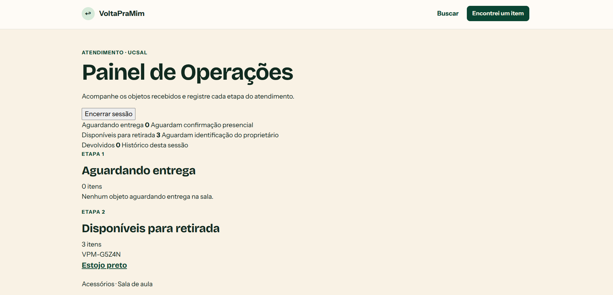
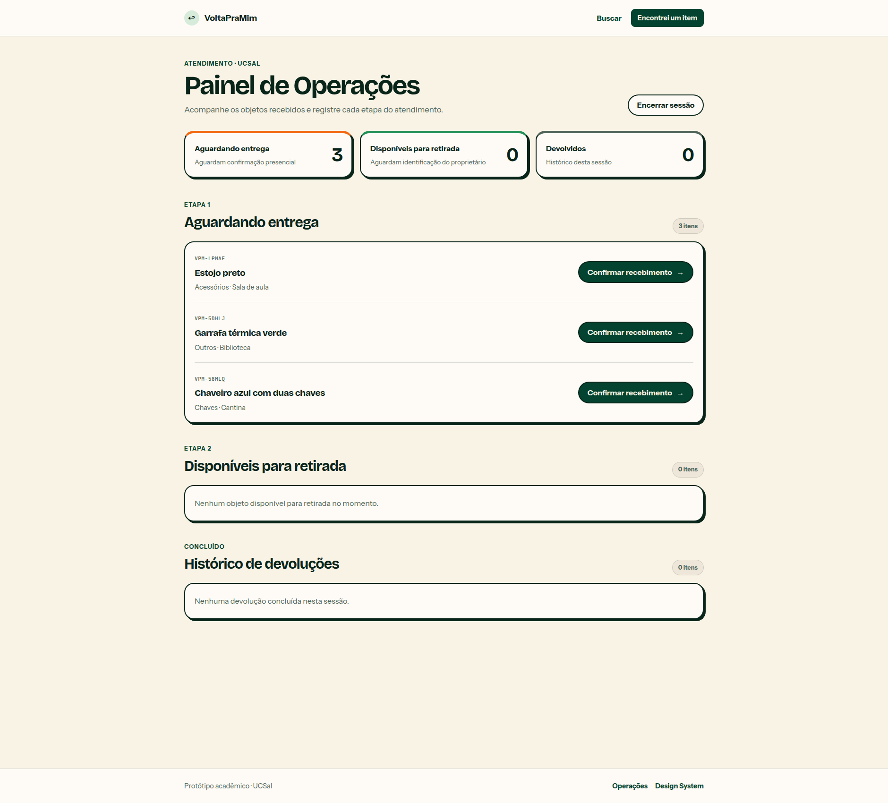
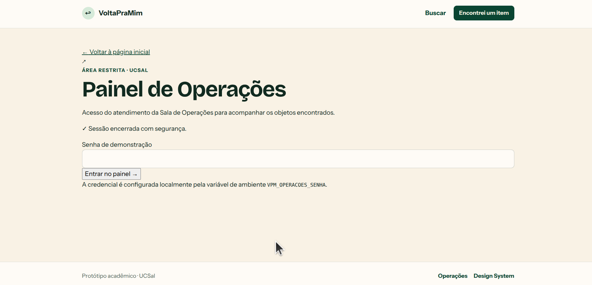
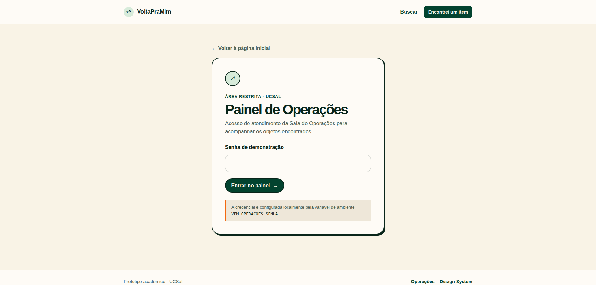

VoltaPraMim · UCSal
Painel de Operações — Antes e Depois
Redesign visual da área de atendimento · 23 de novembro de 2026
O painel foi reorganizado para aproximar a experiência administrativa da linguagem visual usada na página inicial e no cadastro: fundo creme, cartões claros, contornos verde-escuros, sombras marcadas e laranja para chamar atenção aos estados pendentes.
Painel autenticado


Acesso ao painel
A tela de login também passou a usar um cartão centralizado, com hierarquia para título, campo de senha, retorno de sessão e informação sobre a variável de ambiente.


Mudanças principais
As capturas “antes” mostram o estado sem o CSS dedicado aplicado; não são uma reprodução da versão histórica anterior à mudança do HTML. As capturas “depois” foram feitas localmente com dados de demonstração.